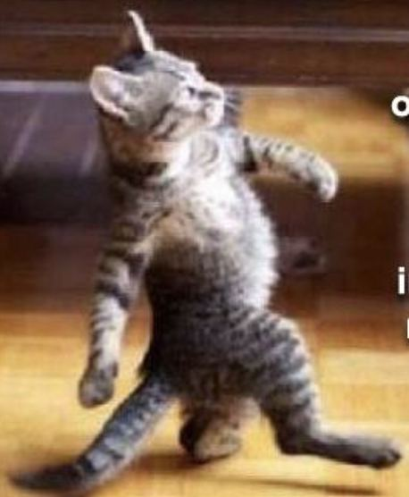
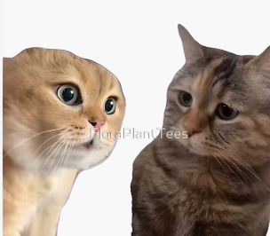

Guía 2: inche, eimi, feyConjugación en modo indicativo singular. Kimeltun 2 y 3.
En esta guía aprendes a decir quién hace la acción. En todo el sitio cada persona tiene su color, igual que las tarjetas de clase:
inche yo, termina en -n eimi tú, termina en -imi fey él / ella / elle, termina en -i
I. Pu che ñi zugun¿Quién habla, a quién le habla y de quién habla?
inche yo. ¿La acción la hago yo, la persona que está hablando? Inche zugun: yo hablé.
eimi tú. ¿La hace la persona a quien le hablo, frente a mí? Eimi zuguimi: tú hablaste.
fey él / ella / elle. ¿La hace alguien de quien hablo, que no participa? Fey zugui: habló.
Fey no distingue género. En español necesitamos «él / ella / elle»; en mapuzugun basta con fey.
El rol cambia según quién habla
Las mismas tres personas. Elige quién habla y a quién le habla, y mira cómo cambian inche, eimi y fey.
Habla:
Le habla a:
II. Chumgechi zewmakünügeiRaíz + terminación de persona
Quitamos la terminación del verbo y agregamos la de quien hace la acción. Si la raíz termina en consonante, inche lleva -ün (azümün).
Máquina de conjugar
Elige un verbo.
¿Hablé o hablo? Sin marca de tiempo, los verbos de acción se entienden como acción realizada (zugun = hablé). Los verbos de estado se entienden en presente (mülen = estoy).
Truco: -n suena a «inche», -imi termina como «eimi», y -i es la más corta, para quien no está en la conversación.
Los verbos del taller
| Verbo | inche · yo | eimi · tú | fey · él / ella / elle |
|---|
Para más adelante: dual y plural
| Pronombre | Sufijo | Ejemplo | Traducción | |
|---|---|---|---|---|
| Dos personas | inchiw | -yu | zuguyu | hablamos los dos |
| eimu | -imu | zuguimu | hablaron ustedes dos | |
| feyegü | -igü | zuguigü | hablaron ellas o ellos dos | |
| Más de dos | inchiñ | -iñ | zuguiñ | hablamos |
| eimün | -imün | zuguimün | hablaron ustedes | |
| feyegün | -igün | zuguigün | hablaron ellas o ellos |
III. AwkantunJuegos para practicar
Semáforo: ¿inche, eimi o fey?
También puedes usar las teclas 1, 2 y 3.
Los gatos del Kimeltun 2
¿Qué hizo cada gato? Elige el verbo en primera persona.


Rueda de nombres: pigen, pigeimi, pigei
En círculo, de a tres. Escribe dos nombres y practica la rueda en voz alta.
IV. EjerciciosEscribe y presiona «Revisar».
1. Completa con la terminación correcta
- Inche küpa Vine.
- Eimi zugu Hablaste.
- Fey amu Fue.
- Inche azüm Entendí.
- Eimi ruka mew müle Estás en la casa.
- Fey ülkantu Cantó.
- Inche ko putu Tomé agua.
- Eimi fachantü küzaw Trabajaste hoy.
2. ¿Quién es? Escribe inche, eimi o fey
- azümimi
- küpai
- mülen
- zugui
- allkütuimi
- txipan
- küzawi
- amuimi
3. Diálogo guiado: completa y luego léelo en pareja
4. Escribe tres frases sobre tu semana
Una con inche, una con eimi y una con fey. Usa los verbos de la tabla.
- Una frase con inche
- Una frase con eimi
- Una frase con fey
Práctica con un hablante
Pregúntale ¿chumleimi? a alguien de tu familia o comunidad y escucha cómo responde. Luego pregúntale ¿chew müleimi fachantü? Anota las formas que usa y tráelas a clase.
Solucionario
1) küpan, zuguimi, amui, azümün, müleimi, ülkantui, putun, küzawimi. 2) eimi, fey, inche, fey, eimi, inche, fey, eimi. 3) chumleimi, kümelkalen, müleimi, mülen, mülei, mülei.